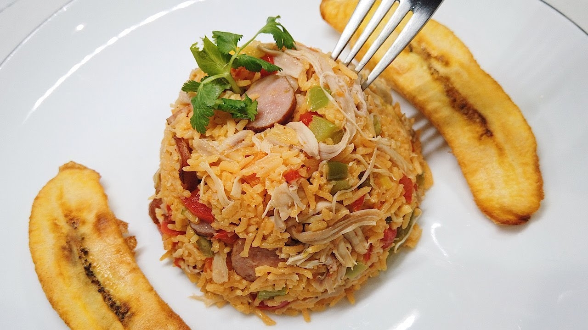

Chicken Rice

chicken Rice
Colombian chicken rice
It is a delicious dish that consists of several ingredients that we will see below
Ingredients
- 4 chicken breasts, cooked and cut into small pieces
- 3 tablespoons canola oil
- 1 large red bell pepper, chopped
- 1 large yellow bell pepper, chopped
- 1 large green bell pepper, chopped
- 1 crushed garlic clove
- 1 medium big onion, chopped
- 3 cups rice
- 5 cups of water
- 2 cups of mixed vegetables in pieces (carrots, peas or peas, kidney beans or beans, yellow corn)
- 1 chicken stock cube
- 1 envelope of seasoning with saffron
- Salt to taste
Steps
- Place the oil in a large pot over low heat. Sauté the three chopped bell peppers, the garlic and the
stubborn onion and stir until they take on a golden color.
- Add the 3 cups of rice, the important thing is to stir very well.
- Add the 5 cups of water, the diced vegetables, the chicken breasts, the chicken bouillon cube, the seasoning packet, and salt to taste. Stir and let cook over medium heat for approximately 15 minutes or until the rice is dry.
- Once the rice has absorbed all the water, cover the pot and cook over low heat for 10 to 15 more minutes until the rice is soft.